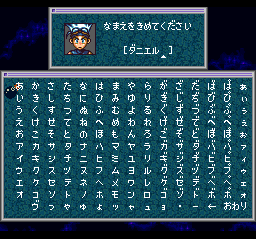
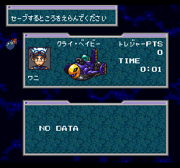
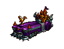
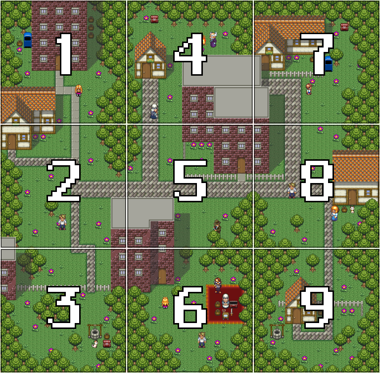
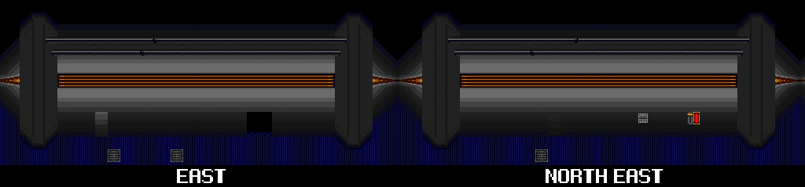
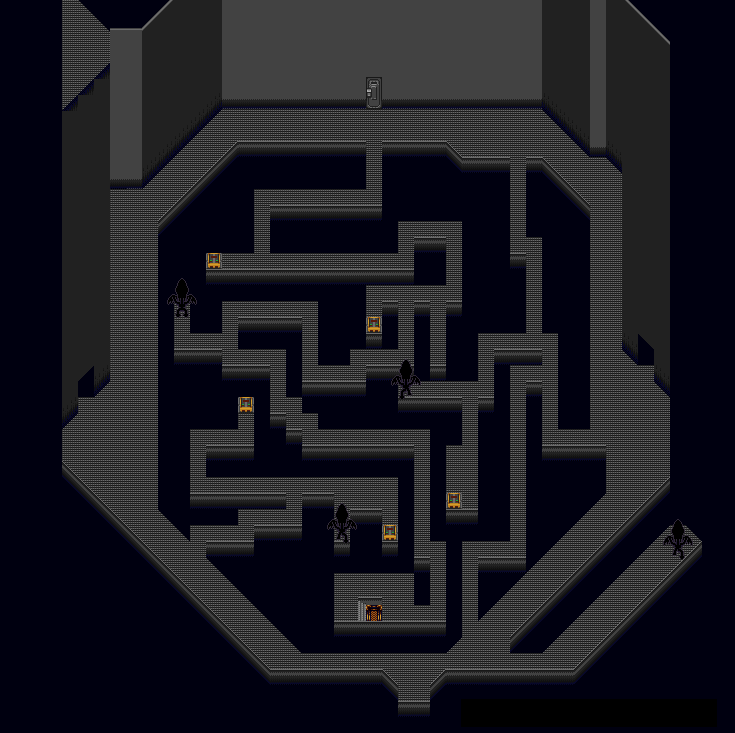

Content
The game
English Patch
Characters
Vehicles
Treasure list
Planet Twin Star
Planet Octave
Planet Skull Bone
Planet Adults
Planet Clockwork Star
Monster Stomach
Normal Quiz
Cult Quiz
Satella
Sand Planet
Planet Minimum Star
Credits
The game
This is the last of 4 games developed by Squaresoft for the Satellaview, the extension of the Super Famicom (SNES).
The other games being Radical Dreamers, Koi wa Balance and Treasure Conflix.
The game was made reusing the Chrono Trigger engine. It looks like a J-RPG but there is no combat.
It’s a treasure hunt set in space. You play as one of 6 characters competing against each other in a race called Dynami Trace.
You have two goals: collect as many treasures as possible from different planets and get to the finish line first.
From the start, you can move freely between planets and even go to the finish line whenever you want.
The winner of the race is determined by the order of arrival and the total value of the treasures. It’s worth noting that the first to cross the finish line gets 1000 pts, and you can get more than 5000 pts from treasures.
As you explore a planet, the 5 other characters controlled by CPUs do the same. Therefore, it’s impossible to get all treasures.
On each planet, you talk to NPCs and help them in various ways that will grant you treasures. You can also sometimes interact with the other racers, if they are on the same planet (you can see their ship orbiting the planet where they are).
Since you can pretty much go to the finish line at any time, the game can be completed in less than one hour.
Overall, this is a very wacky game where you will fight bacteria in a space monster’s stomach with riddles, stop a mad scientist that got a town stuck in a time loop, participate in a songwriting contest, among other things.
A lot of funky humour, fourth wall breaking and obscure cultural references made the game very challenging to translate. I hope I did a decent job, decent enough for non-Japanese speakers to enjoy.
The race is called ダイナマイ・トレース (dainamai torēsu) which is a wordplay on Dynamite Race and how it is pronounced.
The characters are referred to as ダイナマイ・トレーサー (dainamai torēsā) Dynami Tracer which is the title of the game.
English Patch
Version 1.0: BS Dynami Tracer (English) 1.0.zip
The patch applies to the following rom:
File/ROM SHA-1: 2FF4BC75B88480A35F42DB0A2468EB3F6F8E53E5
File/ROM CRC32: 41DAE33C
IMPORTANT NOTE:
As it stands currently (September 03), the patch translates the game into English AND turns the game into a regular SNES game.
Update (September 18): I managed to fit the new data into the 1MB rom so the game now runs as a Satellaview game, as intended!
Hopefully, this improvement doesn’t bring too many bugs.
How to run Satellaview games:
https://krokodyl.github.io/post/2023/07/how-to-satellaview/
What the patch does
Turns the BS game into a regular SNES/SFC game (necessary to fit all the new data)FIXED- Translates menus and dialogs into English
- Adds a VWF engine for the dialogs (the menus are still using a monospace font)
- Changes the character name length from 5 to 7
- Changes the treasure name length from 8 to 16
- Changes the treasure list from 2 to 1 column (in order to fit the longer names)
- Changes the answer length in the quiz from 8 to 16
Known issues
- The character name of one save file may replace the default name of that character in the other save file:
- It only matters if you have a different character in each file and you renamed them
- For example, if you play Rose, renamed Alice, in save 1 and start a new game on save 2 with Daniel. Then Rose will be called Alice in that play-through.
- The high score screen is not updated
- When you stay idle on the title screen, there’s a high score screen.
- After each play-through, it would get updated with your name, rank and score.
- I cannot get this to work yet, because of the length restrictions in character names and the modification I made to have the save file working.
- As it doesn’t work, I disabled this screen.
Screenshots
| Japanese | English |
|---|---|
|  | |
 |
|
|  | |
Playable Characters
| id | Name | ||
|---|---|---|---|
| 01 | Daniel Kosokuno こうそくの ダニエル (kōsokuno danieru) 高速 (kōsoku) = high-speed, 光速 (kōsoku) = light speed |
||
| 02 | Rose Tetsuwan てつわん ローゼ (tetsuwan rōze) (鉄腕 (tetsuwan) = strong arm) |
||
| 03 | Captain Early キャプテン・アーリー (kyaputen ārii) |
||
| 04 |  |
Wilde Hakaitenshi はかいてんし ワイルド (hakaitenshi wairudo) (破壊天使 hakaitenshi = destruction angel) |
|
| 05 | Harper Millionbrain ミリオンブレイン・ハーパー (mirionburein hāpā) |
||
| 06 | Jim Tasogareno たそがれの ジム (tasogareno jimu) (黄昏 tasogare = dusk/twilight, 黄昏れる tasogareru = to be lost in thought) |
Vehicles
| id | Name | |
|---|---|---|
| 01 | Cry Baby クライ・ベイビー (kurai beibii) |
|
| 02 | Mach Mary マッハ・メアリ (mahha meari) |
|
| 03 | Lightning ライトニング (raitoningu) |
|
| 04 | Hell Harley ヘルハーレー (heruhārē) |
|
| 05 |  | The Castle ザ・キャッスル (za kyassuru) |
| 06 |  |
Popuppy ポピュッピー (popyuppii) |
Planets
| Japanese | Name | |
|---|---|---|
| Start | ||
| ツインスター (tsuinsutā) |
Twin Star | |
| オクターブ (okutābu) |
Octave | |
| スカル・ボーン (sukaru bōn) |
Skull Bone | |
| アダルツ (adarutsu) |
Adults | |
| クロックワークスター (kurokkuwākusutā) |
Clockwork Star | |
| モンスター・ストマック (monsutā sutomakku) |
Monster Stomach | |
| サテラ (satera) |
Satella | |
| サンドプラネット (sandopuranetto) |
Sand Planet | |
| ミニマムスター (minimamusutā) |
Minimum Star | |
| Goal |
Why are some planets named star?
The Japanese names for the different planets is borrowed from English, as listed above.
Some names use the word star (スター sutā) or planet (プラネット puranetto).
The Japanese word 星 (hoshi) can mean star or planet depending on the context.
This could explain the confusing choice of naming some planets star.
Another explanation could be that the game designer was purposefully facetious in the naming of the planets. Your guess is as good as mine.
Logo
The voice sample says:
- 宇宙から (uchuukara): From space
- こんにちはー！(konnichiwa): Hello!
Treasures
I haven’t figured out yet the location of three treasures:
- Cat Whiskers on Twin Star
- Moondrop on Sand Planet
- Cheerful Set on Sand Planet
I know the planet they are on as it was revealed on a broadcast magazine: source.
In the game data, Moondrop shares some values with Bakamut’s Egg. So the two treasures could be connected somehow.
The “sets” (including Cheerful Set) are named after the rewards from the Spekkio fights in Chrono Trigger. As the other sets are obtained from Moleman, I’d imagine that Cheerful Set too but I can’t confirm that.
Planet Twin Star
Planet Octave
On the music planet Octave, you enter in a karaoke box where the people have decided they needed a theme song for their planet.
The problem is that they can’t settle on the genre to use.
Four people, each one representing their favorite genre, get to compete against each other in a running & songwriting race.
The four genres are: enka, hero (Super Sentai or Power Rangers kind), idol and rock & roll.
As they all have excuses why they don’t want to do that, the player will be the stand-in runner for one of them.
The race is simple. You run 2 laps around a track and the winner has their genre chosen and gets to perform the theme song.
The lyrics of the theme song are not entirely based on the winner’s genre.
There are five checkpoints around the track (including the finish line).
Every time a runner crosses a checkpoint in first place, they add a random line of their genre to the lyrics as follows:
| Checkpoint | Lines |
|---|---|
| 1 (1st lap) | 1, 11 |
| 2 (1st lap) | 2, 12 |
| 3 (1st lap) | 3, 13 |
| 4 (1st lap) | 4, 14 |
| 5 (1st lap) | 5, 15 |
| 1 (2nd lap) | 6, 16 |
| 2 (2nd lap) | 7, 17 |
| 3 (2nd lap) | 8, 18 |
| 4 (2nd lap) | 9, 19 |
| Finish | 10,20 |
Lines 10 and 20 are like a refrain and always the name of the planet: Octave (That line is doubled if enka is the chosen genre)
After the genre is set for a line, the line itself is picked from 36 different ones for each genre (144 total unique lines).
The same line can’t appear twice.
That’s how the song is created. Even when you get all the lines in the same genre, the lyrics are pretty much nonsense.
Rewards
Here are the reward you get after the song.
| Japanese | English | How to get |
|---|---|---|
| どうのモズしょう | Bronze Shrike Award | Cross 1 to 3 checkpoints first |
| ぎんのモズしょう | Silver Shrike Award | Cross 4 to 7 checkpoints first |
| きんのモズしょう | Gold Shrike Award | Cross 8 or more checkpoints first |
The bull-headed shrike (モズ mozu in Japanese) is a species of bird that has a loud cry when they fight over territory during the fall.
It’s probably why they named the award after that bird.
Planet Skull Bone
On the Skull Bone planet, Deathbone says that he’ll judge your deeds like Satan in hell.
The Japanese version mentions 閻魔 (えんま), Yama, god of death and the underworld in hinduism and buddhism.
Planet Adults
To enter the club as Daniel or Jim, you need:
| Id | Item |
|---|---|
| 11 | Pince-nez |
| 12 | Fake mustache |
| 13 | Top Hat |
| 14 | Cane |
| 15 | Tuxedo |
| 46 | VIP Card |
To enter the club as Rose, you need:
| Id | Item |
|---|---|
| 16 | Bra Inserts |
| 17 | Fishnet Tights |
| 18 | Rouge |
| 19 | High Heels |
| 1A | Pantsuit |
| 46 | VIP Card (optional) |
To enter the club as Early, Wilde or Harper, you need:
| Id | Item |
|---|---|
| 46 | VIP Card |
The old man in the audience gives you a Naga Bromide. It’s a reference to Chrono Trigger.
A bromide is basically a pin-up photograph and the nagas are half-snake half-woman enemies fought in the cathedral.
The three dancers are named after alcoholic drinks:
| Jpn | Eng |
|---|---|
| ブラッディ・マリー (buraddi marī) | Bloody Mary |
| カルーア・ミルク (karūa miruku) | Kahlúa and milk |
| ヤマザキ | Yamazaki (a brand of whisky) |
The third dancer is said to come from the Malboro system. That’s a Final Fantasy reference.
Planet Clockwork Star
In order to get treasures on this planet, you need to understand the subdivision system used by the NPCs.
The town is divided into blocks (丁目 chōme) numbered 1 to 9 from top to bottom then left to right.
It is explained by the girl in block 1.

TV Schedule
In front of the old lady in block 6, there is a TV.
At 1 pm and 10 pm, you can watch the news and get important information about what happened in town.
When the day repeats, you can use that information to, first, help everyone and then get to Madow’s lab (opens at 11pm).
Dr. Madow’s lab
The password to go through the lab is referring to the steps of the mechanism of a cuckoo clock, in reverse order.
In Japanese, they use the word for pigeon/dove (はと hato) because it is called 鳩時計 (はとどけい hatodokeri, lit. pigeon clock).
It is believed that the name for the cuckoo clock was changed because the word cuckoo (閑古鳥 かんこどり kankodori) is associated with a lack of activity in a business and is therefore a bad omen.
The phrase 閑古鳥が鳴く (the cuckoo sings) means ’to be in a slump’.
Monster Stomach

This planet is a series of rooms, each with its own challenge.
Upon arriving, you’re greeted by a doll called コッペリア (kopperia) Coppelia.
It could be a reference to a Romancing Saga character (Coppelia) which is itself probably named after the ballet of the same name.
The Japanese word for bacteria is borrowed from English バクテリア (bakuteria).
Most of the bacteria in the game have a name that starts with バク (baku) .
| Room | Eng |
|---|---|
| Top 1 | Knights and Knaves riddle Two guards. One only tells lies, one tells the truth. You have one yes/no question to find which is which. |
| Top 2 | Arcade game. You can only move left or right and punch with A. You have defend the bacteria. |
| Left | The opposite game. You have to answer a series of increasingly convoluted yes/no questions but say the opposite of the correct answer. I did my best to translate it but it’s tricky because English grammar normally doesn’t allow double (nevermind three or more…) negative clauses and the answer to a negative question is rarely yes or no (A normal person would clarify with Yes I do or No I don’t). |
| Right | Three-card monte You have to keep track of a bad bacteria getting shuffled with 2 good bacteria. |
| Bottom left | Mastermind game. You have to figure out a 3-digit code (Values range from 1 to 8, represented by 8 bacteria lined up). After each guess, the bacteria will assess it: A wiggle means the digit is correct but in the wrong place. A jump means the digit is correct and in the right place. |
| Bottom | Bactrivia Quiz More info below. |
| Bottom right | The odd one out. There’s an odd number of bacteria in the room. You have to find the one that doesn’t behave like any other. |
Mastermind
In the mastermind game room, the 3 bad bacteria are named:
- ピシャ (Pisha)
- ドン (Don)
- リー (Rī)
Together their names spell out ドンピシャリー (Donpishari) which means right on/dead on/perfectly correct.
Bactrivia Quiz
On the Monster Stomach planet, one of the challenge room is a quiz.
You get to choose between a “normal” quiz and a “cult” quiz.
The normal quiz is 15 questions about Dynami Tracer (from a pool of 25 questions).
The cult quiz is 25 questions about all the Squaresoft games released before 1996 (from a pool of 99 questions).
3 mistakes, and it’s over.
For either quiz, you have to type out the answer. This is not a multiple choice quiz.
The Japanese version only allowed 8 characters long answers.
I made modification to increase that to 16 characters.
Cult Quiz
Here is the list of games that the quiz is about:
- Chrono Trigger
- Final Fantasy I
- Final Fantasy II
- Final Fantasy III
- Final Fantasy IV
- Final Fantasy V
- Final Fantasy VI
- Final Fantasy Adventure (Seiken Densetsu)
- Secret of Mana (Seiken Densetsu 2)
- Trials of Mana (Seiken Densetsu 3)
- Live A Live
- The Final Fantasy Legend (SaGa)
- Final Fantasy Legend II (SaGa 2)
- Final Fantasy Legend III (SaGa 3)
- Romancing SaGa
- Romancing SaGa 2
- Front Mission
- Hanjuku Hero
- Famicom 3D System
- Famicom Disk System
- Square’s Tom Sawyer
I tried to translate the questions and the answers as best I could.
There are several challenges:
- If the game has an English release, I did research to get the official translation for whatever names are in the question.
- Some games have different translations on different platforms (e.g. FF with the recent Pixel Remaster for Switch). I tried to keep the translation from the original hardware (GB, NES or SNES) with some exceptions.
- The answers are 8 characters long (I’m hoping to change it to 10 or 12). So some character names are switched from the answer to the question, in order to fill this constraint.
- Some games had no English release (Hanjuku Hero, not even a fan translation. Romancing SaGa only has a fan translation and a PS2 remake). Which means 2 things:
- I had to come up with a translation
- It’s, therefore, impossible to know the answer without look it up on this page
Cult Quiz - Impossible Translations
Here are some questions or answers, that I couldn’t translate faithfully.
| Game | Question | Answer | Comment |
|---|---|---|---|
| FF VI | When they first meet, what does Terra say she took Sabin for? | くま (kumo) Bear |
As explained here, in the SNES version, Terra says she thought Sabin was a bodybuilder. In the Japanese version, she says “one of Vagras’ bear." In the recent Pixel Remaster release of the game, they removed the bodybuilder bit and that’s why I put “Bear” as the answer. |
| Final Fantasy Adventure (Seiken Densetsu) |
What is the name of the alchemist who created the fire shield and ice shield? | ヒパイストス (hipeisutosu) |
Someone on reddit figured out that this is only mentioned in the Basic Knowledge Guide Book. |
| Final Fantasy Legend III (SaGa 3) |
SaGa 2 is subtitled “Hihou Densetsu.” What is SaGa 3’s subtitle? | じくうのはしゃ (Jikū no Hasha) |
The two games are called Final Fantasy Legend II and Final Fantasy Legend III in English. They have no subtitles. |
| Live A Live | In the food items, what is the other bun after the pork bun, the red bean bun and the peach bun? | フカヒレまん (fukahireman) Shark Fin Bun |
As a remake was released in 2022, I wanted to use it as a reference. Unfortunately, they changed the name of the Shark Fin Bun: in Japanese it’s now 小籠包 (Xiaolongbao) and in English it’s Soup Dumpling. I suppose that shark fin was deemed distasteful for a worldwide release. |
| Hanjuku Hero | Frostbaby has two attacks: Waah Waah and ? | バブー (babū) Goo goo |
オギャー and バブー are respectively the sounds of a baby crying (Waah waah) and baby talk (Goo goo/Ga ga). |
| Hanjuku Hero | On Super Famicom, who can use the A-label eggs: Firion, Leon and ? | しゅじんこう (shujinkou) Main Hero/Protagonist |
Because the answer is not clear cut in English, I flipped the question to make “Firion” the answer. The names Firion and Leon are FFII references. |
| Hanjuku Hero | At the end of the game, what country is the princess Iris from? | ノースコリンズ (nōsukorinzu) North Collins |
The translation is here taken from the Japanese phonetically. |
| Hanjuku Hero | What is the name of the shogun in chapter 8? | ノブナーガ (nobunāga) Nobunaga |
The translation is actually faithful, as the name Nobunaga is quite known. |
Normal Quiz - Questions and Answers
Normal Quiz - Questions and Answers
Cult Quiz - Questions and Answers
Cult Quiz - Questions and Answers
Satella
This is an abandoned satellite, invaded by aliens.
As far as I can tell, this is the only place in the game where you can die. If an alien touches you, you instantly lose.
Floor 1
The first floor is an octogonal central room surrounded by a hallway.
You arrive in the South East hallway.
Go left to move clockwise and go right to move anticlockwise.
The central room can be accessed from the North, East, West and South hallways.
There are several hidden rooms in the hallway.
Here is the map of the hallway.

Here is the map of the central room.

In the middle, you can find several chests and the elevator to the floor 2 and 3.
Floor 2 & 3
There, you have to use switches to electrocute the aliens.
Once you get the key, you can use the elevator to the control room.
Contrary to what the game says, you cannot touch the doors when the electricity is on. (it must be a mistake)
Central room of the second floor.
Main room of the third floor.
Control Room
This is the last room. It is located on the first floor, next to the entrance.
There you have to solve a 3x3 Lights Out game.
One way to solve it is to hit the switches in the following order:
┏━━━┳━━━┳━━━┓
┃ 1 ┃ ┃ 4 ┃
┣━━━╋━━━╋━━━┫
┃ ┃ 5 ┃ ┃
┣━━━╋━━━╋━━━┫
┃ 2 ┃ ┃ 3 ┃
┗━━━┻━━━┻━━━┛
The switch next to the right monitor will unlock the Minimum Star.
Once the satellite is fixed, you can go back to the entrance on the right.
Going back down to the hallway, you can get two treasures in hidden rooms:
South West hallway - hidden room: key to the locked chests
South hallway - hidden room: locked chest
North East - hidden room: locked chest
Sand Planet

As far as I can tell, all the treasures to be found here are in the desert. Either by digging or inside the Moleman’s cave (which is found randomly by digging).
Everytime you dig up a treasure, you have the choice to keep it or leave it. The reason is that you can only keep 3 treasures from digging. You should try to only keep the most valuable ones (see the treasure list), although the randomness means that it can take you a lot of time to find good ones.
Once you have kept 3 treasures, you won’t find any more treasures by digging.
I haven’t analyzed the algorithm used, so I don’t know if there is a strategy to optimize the digging.
I also haven’t confirmed all the treasures that can be found by digging (The Earth Crystal is possibly found another way)
When digging, you may fall into the cave of a moleman.
This is a joke character that wants to tell his story.
He has two long draw-out stories, both examples of shaggy dog stories.
You can choose to leave after the first one, but if you listen to both, you get a treasure.
Both stories are purposefully filled with bad puns, jokes, digressions and non-sense.
I took the creative liberty to write new jokes where the Japanese ones didn’t work in English.
シリトリ (尻取り) | shiritori
The first story ends with two jokes.
ちょうじょが おやまの ちょーじょーに じじょが じじょうを せつめいし さんじょが さんじょう つかまつる。
ちょうねんてんの ちょうなんに じなんは ぢなんだと いいつけて さいなんつづきの さんなんなのよ。
The first one is a series of puns around the words for eldest daughter 長女 (ちょうじょ), second daughter 次女 (じじょ) and third daughter 三女 (さんじょ) on a mountain. The second one is similar with the words for eldest son 長男 (ちょうなん), second son 次男 (じなん) and third son 三男 (さんなん) and their various ailments.
The second story contains several jokes:
Moleman repeats a joke he heard and says ふとんが ふんころがし (Futon ga fun korogashi), then complains that you’re not laughing.
I think he’s misremembering 布団が吹っ飛んだ (Futon ga futtonda) which is a famous dajare.
Another one is:
さばくで なに くう? サバくう
What do you eat in the desert? Mackerel.
さばく sabaku = desert
サバくう saba kuu = to eat mackerel
Moleman asks the player what kind of house they live in and proceeds to joke about dessert.
洋館 ようかん (yōkan) Western-style house
羊羹 ようかん (yōkan) Jellied dessert made from red bean paste, agar, and sugar
Minimum Star
This planet is unlocked by completing the Satella station.
In the control room, there’s a switch to activate after finishing the lights out game.
Ending
After the podium, you see Bud writing his article for the newspaper.
You get to see different excerpts from the article depending on your achievements in the game.
(I hid the dialog box in the following screenshots to keep them spoiler-free)
Bud will also disclose a lot of background info about the character you played.
It gives a little depth to the story and an incentive to replay the game with each character.
Without spoiling anything, it explains the relationship between Daniel and Early, the reason why Wilde doesn’t talk much and what the connection between Harper and Jim is.
Now if you don’t finish first, you’ll get the “postcard” screen and a “to be continued” screen.
Like many Satellaview game, the postcard (which shows your score and a code to verify it) was meant to be sent by mail to the studio in order to win prizes.
If you won the game, you get to see the true ending which is the credit roll with some epic music, lyrics and artworks of the characters.
*spoiler* Click here to see the end credits artworks

Bonus points
| Extra points | |
|---|---|
| Finding your own medal | 99 |
| Hanafuda card set (3 cards) |
100 |
| Mythril armor set (3 pieces) |
200 |
| Genji armor set (3 pieces) |
300 |
| Crystal set (4 items) |
400 |
| Rainbow stones (7 stones) |
777 |
Credits
| Role | Name |
|---|---|
| Director | Hiroki Chiba |
| Event Design | Jun Akiyama Takayuki Suguro |
| Design Assist | Kazutoyo Maehiro |
| Field Program | Keizo Kokubo |
| Visual Program | Yasuo Kuwahara |
| Space Map Program | Shinichi Tanaka |
| Character Graphics | Masanori Hoshino |
| Planet Graphics | Takayuki Odachi |
| Background Graphics | Matsuzou Itakura Mami Kawai Kouichi Ebe Yukio Nakatani Hiroaki Kusano |
| Vehicle Graphics | Shinichiro Hamasaka |
| Sound Design | Eiji Nakamura Motoko Watanabe |
| Sound Effects | Kazumi Mitome Hironobu Izumi |
| Voice | Chiharu Minekawa |
| Sound Program | Minoru Akao |
| Utility Program | Kazumi Kobayashi Kouji Sugimoto |
| Test Coordinators | Norimasa Hanada Kozue Kaneko Rei Komatsu |
| Advertisement | Kouji Yamashita Katsunobu Iida |
| Concept Design | Tetsuya Nomura |
| Music Composer | Nobuo Uematsu |
| Producer | Takashi Tokita |
Cultural references
Characters
Rose is often referred to as 紅一点 (こういってん kōitten), lit. “red speck/dot”.
This word comes from the line 万緑叢中紅一点 from poet Wang Anshi that refers to a single red pomegranate blooming in green vegetation.
Today, the word 紅一点 means a person that stands out, such as a single woman in an all-male group.
Music
Yoshōhan Folk
On the music planet, one character sings:
| 君は もう 忘れたかい | Have you already forgotten |
| 二人で 暮らした あの四畳半 | That tiny studio where we lived together? |
四畳半 (よじょうはん yoshōhan) literally means “four and a half tatami.” (translated as tiny studio)
In Japan, the size of a room is often measured by the number of tatami mats and yoshōhan is one of the traditional area units which is about 2.73 metres (8'11½”) × 2.73 metres (8'11½").
Until around the 1970s, the typical size of rooms in shared houses for students and other young people was four-and-a-half tatami mats (for example, Tokiwaso, built in 1952 and famous for the many manga artists who lived there, had all yoshōhan), and the term “yoshōhan” was used, by extension, as a synonym for a room where young people with limited financial resources lived.
四畳半フォーク (よじょうはんフォーク yoshōhan folk) refers to folk songs, mainly from the 1970s, that focus on the purely emotional content in the poor life of two lovers (such as living together in one yoshōhan room).
Famous song in that genre include:
- Kanadagawa (神田川) by the band Kaguyahime (かぐや姫), known, at the time, as Minami Taka to Kaguyahime (南こうせつとかぐや姫) in 1973
- Red lantern (赤ちょうちん) of the same band in 1974
Enka
A kid mentions that if he had to choose the theme, he’d pick Enka.
Enka (演歌) is a Japanese music genre considered to resemble traditional Japanese music stylistically.
Modern enka, however, is a relatively recent musical form, which adopts a more traditional musical style in its vocalism than ryūkōka music, popular during the prewar years.
The kid also mentions Sabu-chan.
Sabu-chan (サブちゃん) is the nickname of famous enka singer Saburō Kitajima who is parodied in the character of Sabugorō.
The singer Sabugorō says that the essence of enka is a mother’s heart.
母ごころ (Mother’s heart) is a song by Yūko Mikasa, a Japanese enka singer.
Naniwabushi
The singer Sabugorō (1st booth) says that people call him a “sad song on two legs”. (naniwabushi in the Japanese version)
Rōkyoku, also called naniwa-bushi, is a genre of traditional Japanese narrative singing. Generally accompanied by a shamisen, rōkyoku became very popular in Japan during the first half of the 20th century.
In modern Japanese slang, “naniwabushi” is sometimes used to mean “a sob story”, since the songs were often about sad subjects.
Memory/Hack
Time
Time is set in WRAM addresses $101B2, $101B3, $101B4.
This is a 3-byte value representing the frame count (60 frames = 1 second).
Treasures
Treasures are defined from WRAM addresses $10100 to $1017D.
Each byte is one treasure. The value indicates which player owns it:
00 = Not owned, 01 = Daniel, 02 = Rose, …, 06 = Jim
Example
$10100 00 00 00 00 00 00 00 00 00 00 01 00 00 03 00 00
$10110 00 00 00 00 00 00 00 00 00 00 00 00 00 00 00 03
$10120 00 03 00 00 00 00 00 03 00 00 00 00 00 00 00 00
$10130 00 03 03 00 03 03 03 03 00 04 03 00 00 00 00 00
$10140 00 00 00 00 00 00 00 00 00 00 00 00 00 00 00 04
$10150 00 00 00 00 00 00 00 00 00 00 00 00 00 00 00 00
$10160 00 00 00 00 00 00 00 00 00 00 00 00 00 00 00 00
$10170 00 00 00 00 00 00 00 00 00 00 00 00 00 00 00 00
The first line shows :
$1010A = 01 means Genji Armor (id 0A) is owned by Daniel (id 01)
$1010D = 03 means Green Stone (id 0D) is owned by Early (id 03)


Share this post: